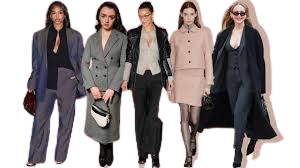

What is this new trend?
The "office siren" trend is a phenomenon born with the social media and blends the classic office attire with a little bit of fashion and industrial chic.
The keys to dress like an office siren
In order to follow this trend there are a couple of things you have to pay attention to:
- Office staples: blazersm, pencil skirts, blouses, shirts, and tailored trousers are the foundations of the look
- Fitted silhouettes: the real office siren likes to wear clothes that hug their body, like fitted tops or pencil skirts.
- Accessories: to complete your outfit, the accessories are the best things you could use. Some characteristic ones of this style are thin glasses, analog watches, jewels and classic clutches or bags.
- Hair and makeup: an outfit can't be finished without taking care of our beauty! The favored hairstyles are the pulled-back ones, like sleek buns, or blowouts. Meanwhile, it's preferred a light and natural makeup.
Where does this style come from?
This style is inspirated to the early 2000s, especially to the fashion movies of that period, like "The Devil Wears Prada".
I think it's also important to note that this trend doesn't want to be an unrespectful way to dress, but only an option to the classic work attire. Indeed, it's possible to find numerous examples on the internet of "office siren" outfits and examples of things not to wear, to avoid being inappropriate.
Some exaples of "office siren" outfits:

source: Vogue